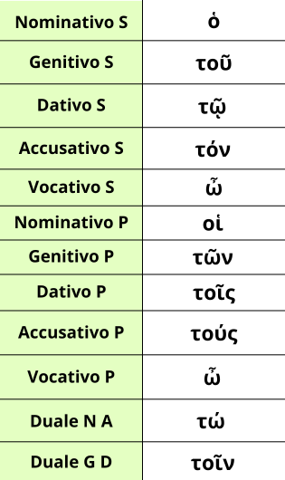

L'articolo maschile è una tipologia di articoli dedicata ai sostantivi maschili.
In ordine da Nominativo a Vocativo, da Singolare a Duale è: ὁ, τοῦ, τῷ, τόν, τώ, οἱ, τῶν, τοῖς, τούς, τοῖν.
Come avrai potuto notare, essi seguono la seconda declinazione dei sostantivi, puoi vedere da ο.
Come già detto di nella pagina di (Introduzione Generale), al vocativo non esiste alcun articolo, se non l'interiezione ὦ.